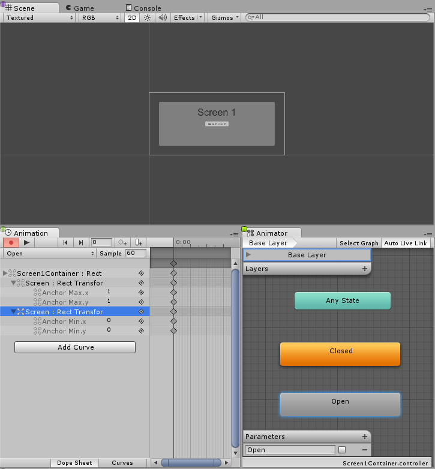
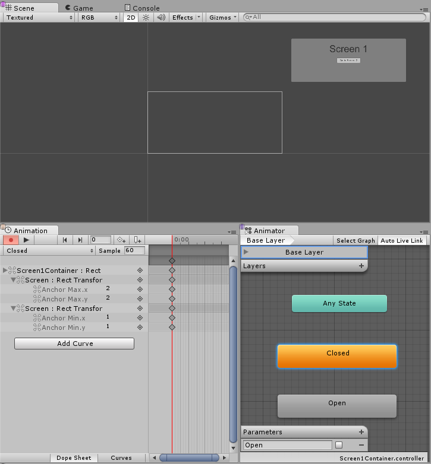
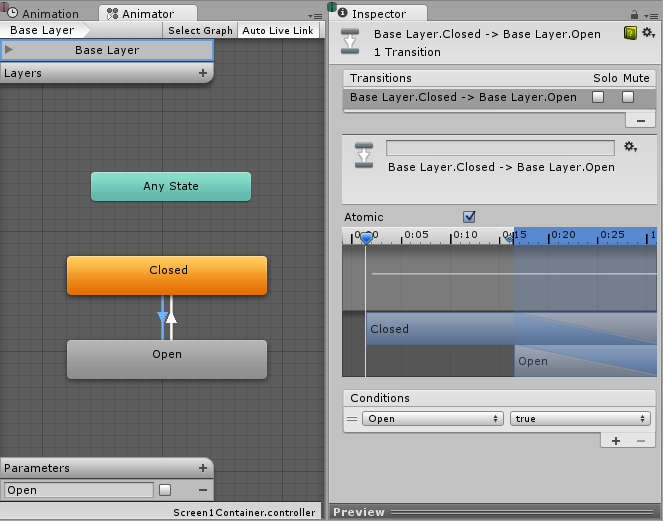
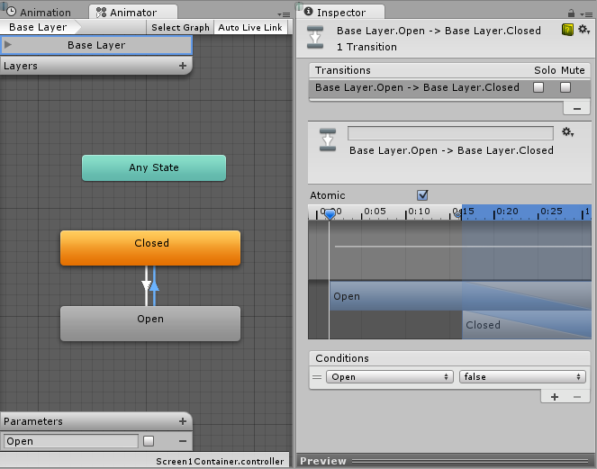
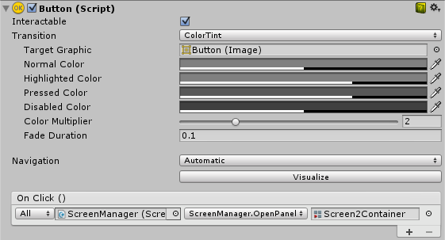

Creating Screen Transitions¶
The need to transition between multiple UI screens is fairly common. In this page we will explore a simple way to create and manage those transitions using animation and State Machines to drive and control each screen.
Overview¶
The high-level idea is that each of our screens will have an Animator Controller with two states (Open and Closed) and a boolean Parameter (Open). To transition between screens you will only need to close the currently open Screen and open the desired one. To make this process easier we will create a small Class ScreenManager that will keep track and take care of closing any already open Screen for us. The button that triggers the transition will only have to ask the ScreenManager to open the desired screen.
Setting up the Animator Controller¶
Let’s take a look at the most common and minimal setup for the Animation Controller to do a Screen transition. The controller will need a boolean parameter (Open) and two states (Open and Closed), each state should have an animation with only one keyframe, this way we let the State Machine do the transition blending for us.


Now we need to create the transition between both states, let’s start with the transition from Open to Closed and let’s set the condition properly, we want to go from Open to Closed when the parameter Open is set to false. Now we create the transition from Closed to Open and set the condition to go from Closed to Open when the parameter Open is true.


Managing the screens¶
With all the above set up, the only thing missing is for us to set the parameter Open to true on the screens Animator we want to transition to and Open to false on the currently open screens Animator. To do that, we will create a small script:
using UnityEngine;
using UnityEngine.UI;
using UnityEngine.EventSystems;
using System.Collections;
using System.Collections.Generic;
public class ScreenManager : MonoBehaviour {
//Screen to open automatically at the start of the Scene
public Animator initiallyOpen;
//Currently Open Screen
private Animator m_Open;
//Hash of the parameter we use to control the transitions.
private int m_OpenParameterId;
//The GameObject Selected before we opened the current Screen.
//Used when closing a Screen, so we can go back to the button that opened it.
private GameObject m_PreviouslySelected;
//Animator State and Transition names we need to check against.
const string k_OpenTransitionName = "Open";
const string k_ClosedStateName = "Closed";
public void OnEnable()
{
//We cache the Hash to the "Open" Parameter, so we can feed to Animator.SetBool.
m_OpenParameterId = Animator.StringToHash (k_OpenTransitionName);
//If set, open the initial Screen now.
if (initiallyOpen == null)
return;
OpenPanel(initiallyOpen);
}
//Closes the currently open panel and opens the provided one.
//It also takes care of handling the navigation, setting the new Selected element.
public void OpenPanel (Animator anim)
{
if (m_Open == anim)
return;
//Activate the new Screen hierarchy so we can animate it.
anim.gameObject.SetActive(true);
//Save the currently selected button that was used to open this Screen. (CloseCurrent will modify it)
var newPreviouslySelected = EventSystem.current.currentSelectedGameObject;
//Move the Screen to front.
anim.transform.SetAsLastSibling();
CloseCurrent();
m_PreviouslySelected = newPreviouslySelected;
//Set the new Screen as then open one.
m_Open = anim;
//Start the open animation
m_Open.SetBool(m_OpenParameterId, true);
//Set an element in the new screen as the new Selected one.
GameObject go = FindFirstEnabledSelectable(anim.gameObject);
SetSelected(go);
}
//Finds the first Selectable element in the providade hierarchy.
static GameObject FindFirstEnabledSelectable (GameObject gameObject)
{
GameObject go = null;
var selectables = gameObject.GetComponentsInChildren<Selectable> (true);
foreach (var selectable in selectables) {
if (selectable.IsActive () && selectable.IsInteractable ()) {
go = selectable.gameObject;
break;
}
}
return go;
}
//Closes the currently open Screen
//It also takes care of navigation.
//Reverting selection to the Selectable used before opening the current screen.
public void CloseCurrent()
{
if (m_Open == null)
return;
//Start the close animation.
m_Open.SetBool(m_OpenParameterId, false);
//Reverting selection to the Selectable used before opening the current screen.
SetSelected(m_PreviouslySelected);
//Start Coroutine to disable the hierarchy when closing animation finishes.
StartCoroutine(DisablePanelDeleyed(m_Open));
//No screen open.
m_Open = null;
}
//Coroutine that will detect when the Closing animation is finished and it will deactivate the
//hierarchy.
IEnumerator DisablePanelDeleyed(Animator anim)
{
bool closedStateReached = false;
bool wantToClose = true;
while (!closedStateReached && wantToClose)
{
if (!anim.IsInTransition(0))
closedStateReached = anim.GetCurrentAnimatorStateInfo(0).IsName(k_ClosedStateName);
wantToClose = !anim.GetBool(m_OpenParameterId);
yield return new WaitForEndOfFrame();
}
if (wantToClose)
anim.gameObject.SetActive(false);
}
//Make the provided GameObject selected
//When using the mouse/touch we actually want to set it as the previously selected and
//set nothing as selected for now.
private void SetSelected(GameObject go)
{
//Select the GameObject.
EventSystem.current.SetSelectedGameObject(go);
//If we are using the keyboard right now, that's all we need to do.
var standaloneInputModule = EventSystem.current.currentInputModule as StandaloneInputModule;
if (standaloneInputModule != null)
return;
//Since we are using a pointer device, we don't want anything selected.
//But if the user switches to the keyboard, we want to start the navigation from the provided game object.
//So here we set the current Selected to null, so the provided gameObject becomes the Last Selected in the EventSystem.
EventSystem.current.SetSelectedGameObject(null);
}
}
Let’s hook up this script, we do this by creating a new GameObject, we can rename it “ScreenManager” for instance, and add the component above to it. You can assign an initial screen to it, this screen will be open at the start of your scene.
Now for the final part, let’s make the UI buttons work. Select the button that should trigger the screen transition and add a new action under the On Click () list in the Inspector. Drag the ScreenManager GameObject we just created to the ObjectField, on the dropdown select ScreenManager->OpenPanel (Animator) and drag and drop the panel you want to open when the user clicks the button to the las ObjectField.

Notes¶
This technique only requires each screen to have an AnimatorController with an Open parameter and a Closed state to work - it doesn’t matter how your screen or State Machine are constructed. This technique also works well with nested screens, meaning you only need one ScreenManager for each nested level.
The State Machine we set up above has the default state of Closed, so all of the screens that use this controller start as closed. The ScreenManager provides an initiallyOpen property so you can specify which screen is shown first.